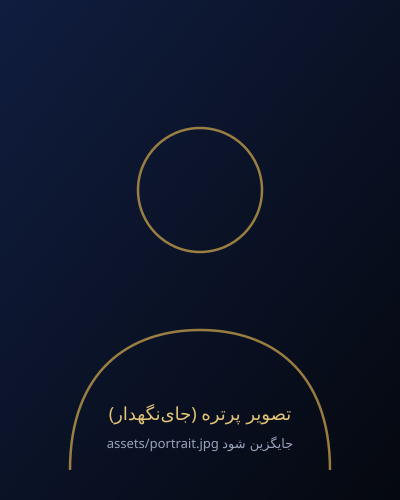

معرفی وکیل
اسماعیل ابدی مقدم ثمرین

اسماعیل ابدی مقدم ثمرین
متن و تصویر این بخش نمونه است و پس از تأیید وکیل تکمیل میشوداین بخش به معرفی حرفهای، سوابق کاری و تجربیات وکیل اختصاص دارد. هیچ سابقه یا اطلاعات حرفهای تأییدنشدهای در این صفحه درج نشده است.
متن معرفی نهایی، شامل سوابق تحصیلی و کاری، پس از دریافت اطلاعات تأییدشده از خود وکیل جایگزین این متن میشود.
حوزههای فعالیت (پیشنهادی)
مدارک و مجوزها
رویکرد حرفهای
نگاه ما به ارائهٔ خدمات حقوقی
متن نهایی این بخش پس از تأیید وکیل جایگزین میشود.
شنیدن
شناخت دقیق مسئله و هدف موکل
تحلیل
بررسی حقوقی مبتنی بر قانون و مستندات
اطلاعرسانی
گزارش روشن از روند پرونده
پیگیری
اقدام مستمر در مراجع ذیصلاح
برای بررسی مسئلهٔ حقوقی خود آمادهاید؟
درخواست خود را ثبت کنید تا دفتر وکالت برای هماهنگی مشاوره با شما در تماس باشد.
دریافت مشاوره حقوقی